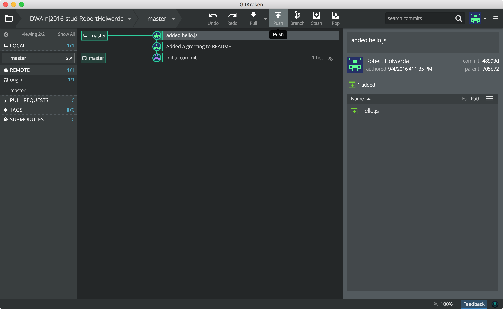
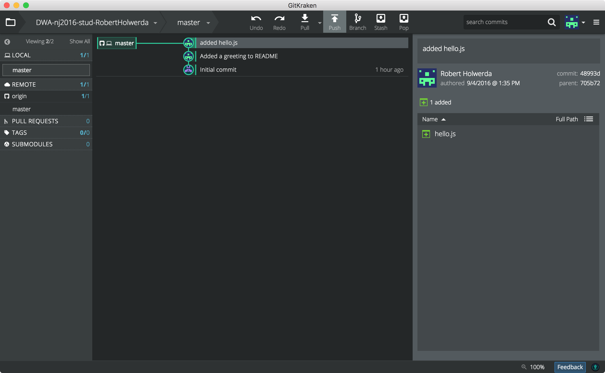
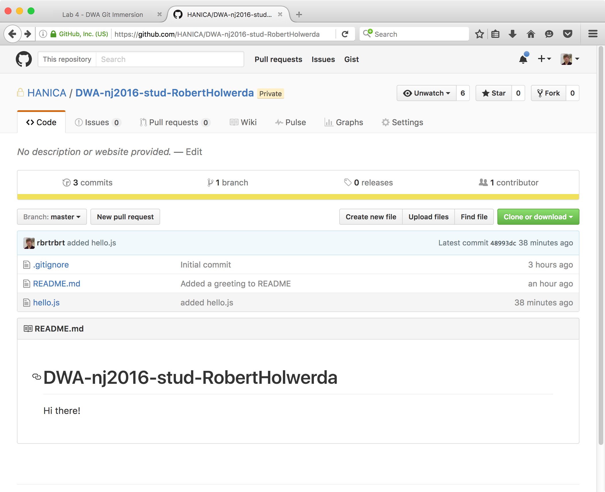

lab 5 Pushing
Goals
- Learn how to push local changes to the remote repo
01Push changes to your remote repo.
To update the remote repo with your local changes, you'll need to execute a push. This will apply all local commits since the last push to the remote repo, so you can apply multiple commits with one push.
But First:
Make sure your repo is clean: There should be no uncomitted changes in either the "Unstaged Files" box or the "Staged Files" box. No "WIP" line either.
If you have uncommited changes, either commit them, or delete them by unstaging all staged files, and then discarding all changes.
Now, PUSH!
In the top row of the GitKraken screen, there's a button called "Push" (highlighted in the screenshot below):
A simple press on "Push" should send the new commits to Github. Go ahead.
After a notification that the push was succesful, only a subtle change in the GitKraken screen shows the effect of the push:
The two "master"-labels have merged into one. This one contains both the "local repo" icon and the "github" icon. The "remote" repo on Github is no longer two commits behind.
Check it out
Reload your repo-page on the Github.com site.
Notice that README.md does have the newly added line of text.
Notice that hello.js exists, and has the right content.
Notice that Github mentions the existence of 3 commits
For both README.md and hello.js, Github shows the name of the last commit that affected the file next to the filename.
